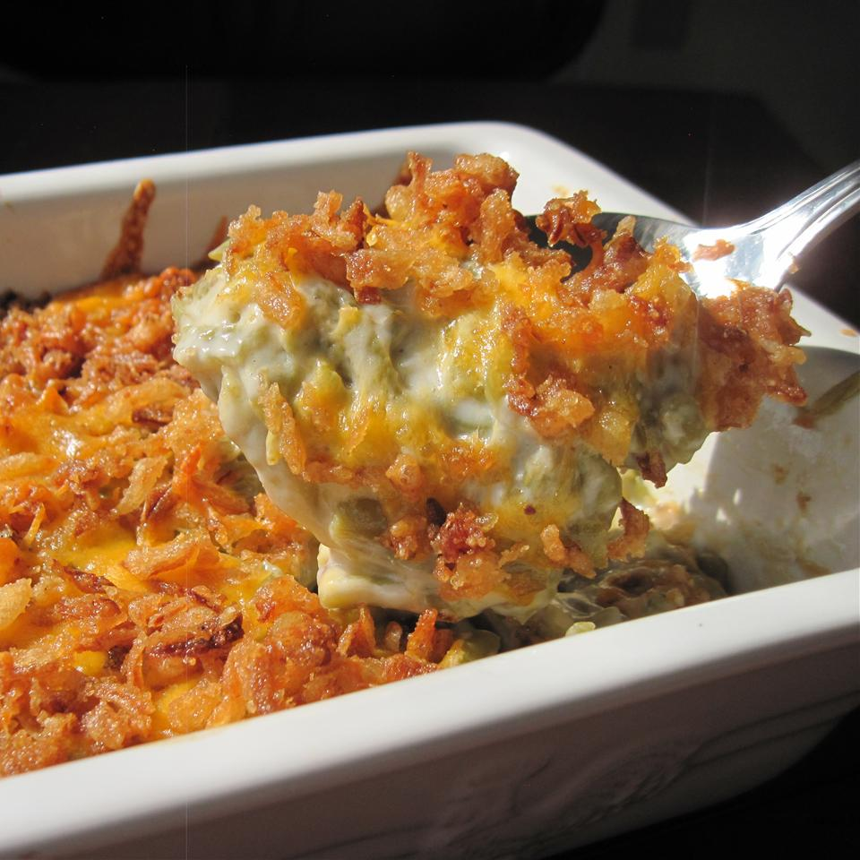

Green Bean Casserole

Description
Created by Campbell Test Kitchen Manager Dorcas Reilly in 1955, its creamy, smooth sauce and
unmatchable flavor combined with its simplicity makes Green Bean Casserole so appealing.
Just five ingredients and 10 minutes to put together, this family pleasing side has been a
favorite for over 60 years.
Ingredients
- 1 can (10 1/2 ounces) Campbell’s® Condensed Cream of Mushroom Soup or 98% Fat Free Cream of Mushroom Soup or Condensed Unsalted Cream of Mushroom Soup
- 1/2 cup milk
- 1 teaspoon soy sauce
- 4 cups cooked cut green beans
- 1 1/3 cups French's® French Fried Onions (amount divided in recipe steps below)
Steps
- Heat the oven to 350°F. Stir the soup, milk, soy sauce, beans and 2/3 cup onions in a 1 1/2-quart casserole. Season the mixture with salt and pepper.
- Bake for 25 minutes or until hot. Stir the bean mixture. Sprinkle with the remaining 2/3 cup onions.
- Bake for another 5 minutes or until the onions are golden brown.